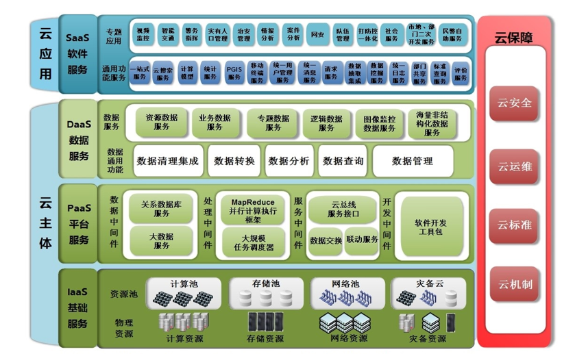

公安警务云
方案概述
警务云是依托于浪潮云海IOP平台，基于与计算、大数据技术，通过平台、数据与服务相结合，面向公安行业的警务应用生态体系，是全国首个基于大数据的警务云整体解决方案。
方案架构

IaaS基础服务：利用浪潮高性能服务器与存储设备，构建虚拟化资源平台、大数据平台等等，形成超强计算能力、超大存储容量的计算资源池与存储资源池，为上层提供基础环境服务。
PaaS平台服务：基于浪潮云海IOP平台，采用大数据处理与挖掘分析、智能应用、智能消息推送、社会化协作、服务化架构等云计算关键技术，建立警务云技术生态体系和警务云应用生态体系。
DaaS数据服务：围绕各类数据资源进行标准化、标签化与索引化处理，基于信息资源共享平台，将数据以服务的方式提供给上层的各类警务应用。同时利用大数据分析挖掘技术与信息关联技术对数据资源进行深度利用，形成各类专题数据资源。
SaaS软件服务：基于大数据警务云平台提供的平台、数据与服务等各类云资源，面向公安实战业务需求进行建设，更具广度、深度、高端的合成警务应用。
方案价值
浪潮公安警务警务云解决方案主要实现集成业务系统，有效整合公安内外资源，提高公安信息化深度应用、高端应用、合成应用能力和水平，通过警务云系统建设完善情报信息主导警务机制，提高多侦联动、多轨联控和预警防范能力；完善立体化社会治安防控体系，加强基层基础、治安防范、网络社会和公共安全管理手段；完善网上执法办案、执法监督、有责信访、培训考核，提高社会管理和服务民生的网络化、信息化水平；增强重大安保、应急处突保障能力，整合指挥调度、地理信息、图像信息，提高公安机关合成作战、快速反应能力；完善信息中心和各类基础设施，形成信息化建设综合保障长效机制，整体提升全省公安信息化管理和应用水平。